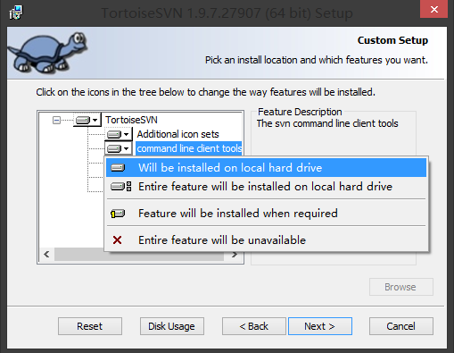

下载并安装所需程序
TortoiseSVN https://tortoisesvn.net/downloads.html
安装的时候记得勾选 command line tools 选项以安装后面需要的 svnserve.exe , 如下图所示 :

创建资料库 (Repository)
选择一个空的文件夹 , 例如 F:\Code\ExampleRepository , 一定要是空的哦 ! 这个文件夹用于保存所有你建立的资料库 ;
在文件夹下右键 , 选择 TortoiseSVN -> Create repository here , 点击确定就创建好了一个 Repository , 这个 Repository 可以看作服务器上存放数据的数据库
配置用户和权限
到刚才创建的 Repository 中 , 进入 conf 文件夹 , 修改 svnserve.conf 如下 :
[general]
# anon-access = read
# auth-access = write
# password-db = passwd
改为 :
[general]
anon-access = none // 未验证用户无任何权限
auth-access = write // 已验证用户给予写权限
password-db = passwd // 密码数据存放到 passwd 文件中
anon-access = none 为未验证用户没有任何权限 , 如果这里不改 , 用户不用输入密码即可获得代码版本 ;
auth-access = write 已验证用户给予写权限 ;
password-db = passwd 将密码存到 passwd 文件中
然后修改同目录的 passwd文件 , 如下 :
[users]
# harry = harryssecret
# sally = sallyssecret
改为 :
[users]
harry = harryssecret
sally = sallyssecret
该配置左侧是用户名 , 右侧是密码 , 如果你需要增加新的用户名和密码 , 只需在新的一行中创建 , 如 : username = password
启动 Svn 服务
当 TortoiseSVN 安装成功后 , 它已经加入到了 path 中 , 所以下面打开运行 cmd , 并输入如下命令启动 Svn 服务 :
svnserve -d -r F:\Code\ExampleRepository
这样客户端就可以访问了 , 注意不要关闭命令行窗口 , 关闭窗口也会把 svnserve停止
安装TortoiseSVN , 与上面相同
在客户端的项目文件夹中 , 点击右键并选择 SVN CheckOut...
在 Repository 的 Url 处输入对应主机的地址 , 格式如下 : svn://127.0.0.1/ExampleRepository , 这样就可以将资料从服务器端 checkout 了
如果访问的是一个有密码的资料库 , 只需要输入 passwd 里面配置的用户名和密码登录就可以了
sc create "SVN SERVICE JOHN" binPath=
"C:\Program Files\TortoiseSVN\bin\svnserve.exe --service --root F:\Code\ExampleRepository"
displayName= "SVN SERVICE JOHN" depend= TCPIP start= auto
SVN SERVICE JOHN 为服务的名称 , 所有的系统服务可以在 dos 下通过命令手动启动和停止 ;
启动 : net start "SVN SERVICE JOHN"
停止 : net stop "SVN SERVICE JOHN"
binpath 为安装 "SVN SERVICE JOHN" 的路径 , 可执行文件的路径
F:\Code\SvnRepository 为版本库的路径
displayname= "SVN SERVICE JOHN" 为注册成的系统服务显示名称 , 注册成功后 , 可以在系统服务中找到这个名称
depend= TCPIP 为依赖 TCPIP 协议
start= auto 为注册成的系统服务启动类型为自动
删除服务 : sc delete "SVN SERVICE JOHN"